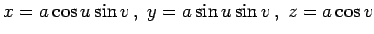

Inhalt Index DeskTop Bronstein

 Geometrie Differentialgeometrie Flächen Tangentialebene und Flächennormale
Geometrie Differentialgeometrie Flächen Tangentialebene und Flächennormale


Die Gleichungen der Tangentialebene und der Flächennormalen sind in der folgenden Tabelle zusammengestellt.
| Art der Gleichung | Tangentialebene | Flächennormale |
| (3.509) | ||
| (3.510) | Z-z =p(X-x)+q(Y-y) | |
| (3.511) | ||
| (3.512) | oder |
oder |
| x, y, z und |
||
| sind die laufenden Koordinaten und der Radiusvektor der Punkte der | ||
| Tangentialebene oder der Flächennormalen; außerdem ist , und | ||
| *1) (S. Spatprodukt dreier Vektoren). | ||
| Beispiel A | ||||
|
Für die Kugel mit der Gleichung x2+y2+z2-a2 =0 (3.513) ergibt sich 1. als Tangentialebene:
2. als Flächennormale:
|
| Beispiel B | ||||
|
Für die Kugel mit der Gleichung  (3.514) ergibt sich 1. als Tangentialebene:
2. als Flächennormale:
|